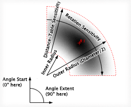
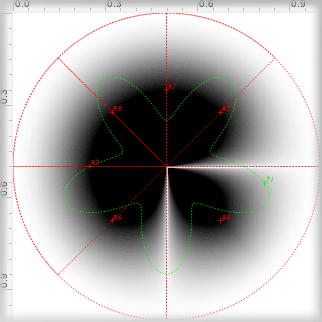

The Sector Receiver is an original feature of Meloncillo. It generalizes the model of the Sigma Receiver by introducing a start and stop angle and an inner diameter. Its sensitivity is the product of two tables, a distance and a rotation table. For each point on the surface that lies within the receiver's area (the red sector), the sensitivity is a value taken from the distance table - as a function of the distance of that point to the receiver's anchor - multiplied by a value taken from the rotation table - as a function of the angle of that point to the receiver's virtual center.
Angles are specified in degrees with zero degrees origin being in the "north" (twelve o'clock) and increasing clockwise. The rotation table is read from the start angle which corresponds to the left most value of the table and running for the angle extent which corresponds to the right most value of the table. Likewise, the distance table is read from the inner radius which corresponds to the left most value of the table and running to the outer radius which corresponds to the right most value of the table.
By default, the rotation table is the square root of a triangle and the distance table is a raised sine. This means, that for 50% overlap of neighbouring sector receivers, a circular movement retains unity gain which is usually desired in intensity panning. The raised sine of the distance table makes it easy to make circular movements with unity gain (because of the flat "top") and to attenuate the sound by moving farer away from the sphere's center. Alternatively, you could try to fill the distance table with 0.5 periods of a cosine (use a sine with 90 degree phase shift) with amplitude 2.0 which will allow you to amplify the sound by moving a transmitter towards to center of the circle (set inner diameter to 0.0), as shown in the picture below:
In the picture, you see eight sector receivers arranged in a circle. Receivers R3 and R5 have been removed to see R4 isolated. It has an extent of 90 degrees and the distance table filled as described above.